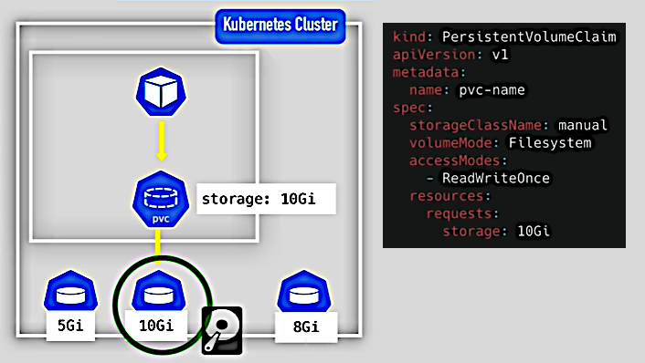

K8s Volumes
K8s has no persistence out of the box. So we need to make extra adjustments in order to keep the data between the Pods restarts. This may be required for databases and shared directories.
We will discuss three components:
K8s documentation: Persistent Volumes.
Persistent Volume (PV) may be thought as a cluster resource (like RAM or CPU) that is used
to store data. It's created via YAML file (kind: PersistentVolume). It defines parameters like
storage space amount but doesn't define the parameter of its actual allocation (local disk inside
the cluster, external NFS, or Cloud storage).
K8s doesn't care about the actual storage. It provides us a PV as abstraction and let us take care about the storage backend (allocation, backup and restore, etc.).
See the documentation section above for the examples of configuration files. Also see K8s documentation section Types of Persistent Volumes for the list of the supported backends.
Note that PVs are not namespaced. So they are accessible to all components in all Namespaces.
Local volumes violate requirements 2 and 3 (see above), so for databases persistence remote storage must be used.
K8s Admins set up the cluster and assures it has enough resources. K8s Users deploy applications. So Admins configure the physical storage (like local, NFS and cloud) and make it available inside the cluster. They also configure PVs for the storage backends. The Users configure Pods to reference the configured PVs.

Applications claim the PVs using Persistence Volume Claim (PVC) components. Configuration
files for these components have type: PersistenceVolumeClaim. A PVC must exist in the same
Namespace as the Pod that references this PVC. In the Pod's container the actual path to the
storage location is mounted.
These levels of abstractions help distribute responsibilities between Admins and Users.
They are:
Assume we need a certificate file (not a certificate as a binary object) mounted inside a Pod. Or some application configuration need to be represented as files. In this case we create ConfigMaps and/or Secrets and mount them as Volumes inside the container.
K8s documentation: Storage Classes.
With many Pods, creating and managing external PersistentStorage components and their
corresponding backends may be to hard or impossible. To make this process more efficient another
component called StorageClass (SC) is used. SC provisions PersistentVolumes dynamically
when PVC claims it. It's created with configuration file with type: StorageClass.
SC is another abstraction level that defines:
The SC is referenced from the PVC YAML file.